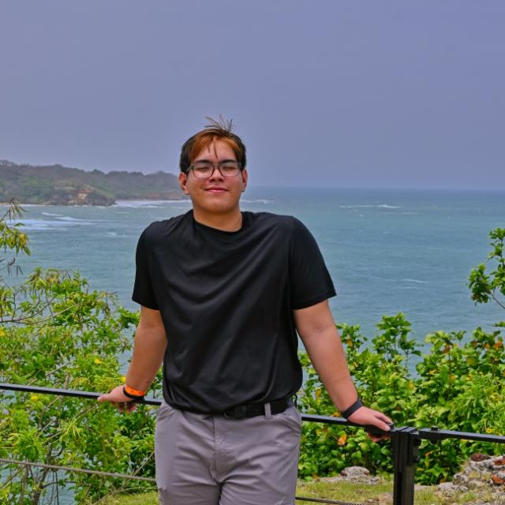

Aaron Remarchuk

Nací el 18 de octubre de 2006, en Panamá.
Mi papá se llama Frank Remarchuk y mi mamá Chia Chan.
Mi experiencia programando ha sido con la universidad en Java, python, SQL y C.
En cuanto herramientas en la web solo he utilizado google sites y Wix, no he visto nada de código.
Yongsheng Du

02/04/2004, Mi papa se llama Shaofeng Du y mi mama se llama Jinxia Pan, nací en China.
Experiencia de programador:
Durante mi formación universitaria he aprendido los fundamentos de programación en Java, sql y en lenguaje C
Herramientas de web:
Para realizar mis prácticas y proyectos web utilizo Visual Studio Code para escribir, organizar y probar código de páginas web.
Kevin Pan

26 de diciembre de 2005, Mi papa se llama Youmei Pan, Mi mama se llama Qin Zou Pan
Experiencia de programador:
Yo tuve mini experiencias de programación a través de Unity3d y C# creando diferentes componentes o mecanicas para juegos. Y realizando diferentes desafios/retos/pruebas en codewars.com
Herramientas de web:
un poco por curiosidad atraves de videos breves de YouTube y creando paginas web de como de este estilo.